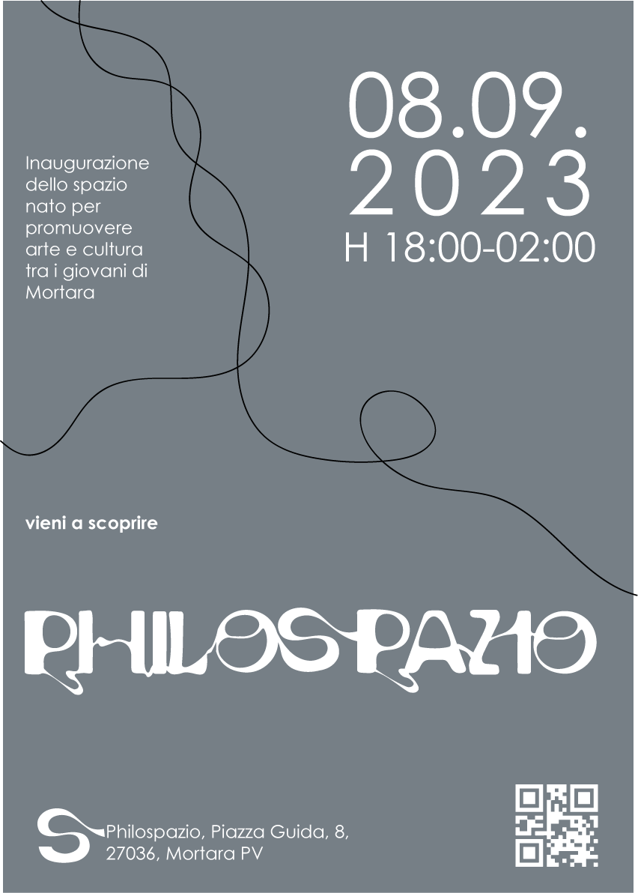

Philospazio
Interior Design · Social Space · Visual Identity
Philospazio is a community and educational hub in Mortara designed to connect people of all ages through creativity and shared passions. Conceived as a living, evolving space, it invites users to actively shape its identity. The project transforms an abandoned building into a sustainable cultural center with minimal structural intervention, reusing materials and systems to give them—and the space itself—a second life.

Year
2023
Context
BA Thesis Project,
Politecnico di Milano
Role
Concept, Art Direction,
Technical Development
Duration
6 months
Tools
Rhino, Photoshop,
AutoCAD, Illustrator
Team
Mariachiara Titton,
Marisabel Nespoli


Building

Visual Identity

